Locandine
Otto stagioni annunciate a modo suo, fra il maggio 2014 e il giugno 2015: San Pietroburgo, Parigi, Vienna, Berlino, Monaco. Non i manifesti dei teatri, ma quelli che si faceva lui per ogni recita. Realizzate da Massimo Giordano: si possono scaricare e usare citando la fonte.
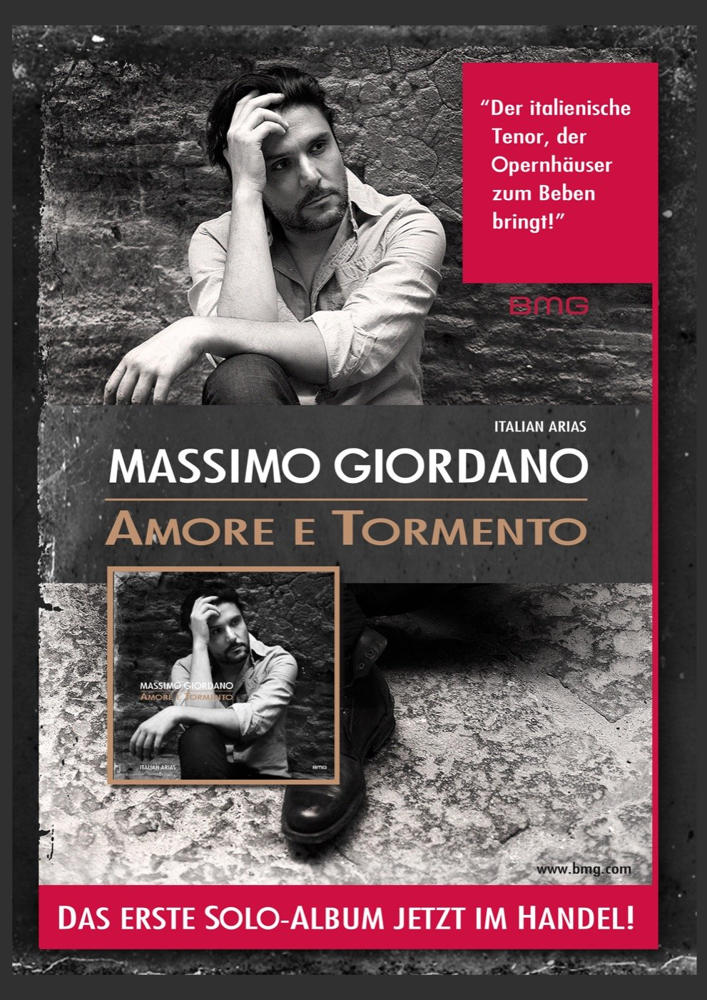
Manifesto BMG per l’uscita del primo disco · 2013 · fotografia di Marisa Crawford · «Der italienische Tenor, der Opernhäuser zum Beben bringt» — il tenore italiano che fa tremare i teatri d’opera
Scarica

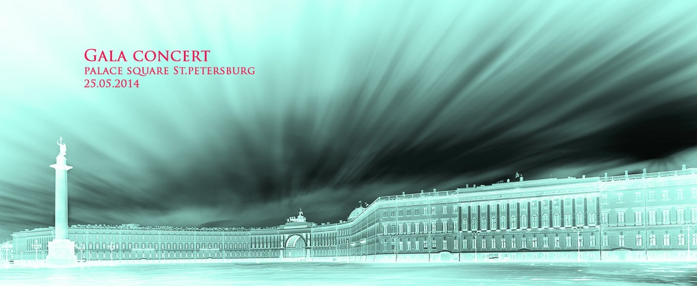
Piazza del Palazzo, San Pietroburgo · 25 maggio 2014
Scarica

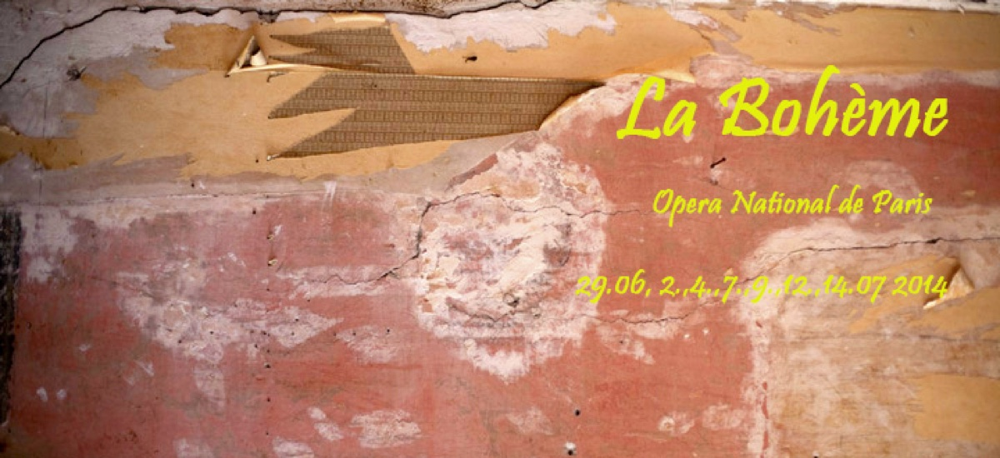
Opéra national de Paris · 29 giugno, 2, 7, 12, 14 luglio 2014
Scarica


Opéra national de Paris · 1, 4, 10, 13, 15 novembre 2014
Scarica

Wiener Staatsoper · 18 febbraio 2015
Scarica
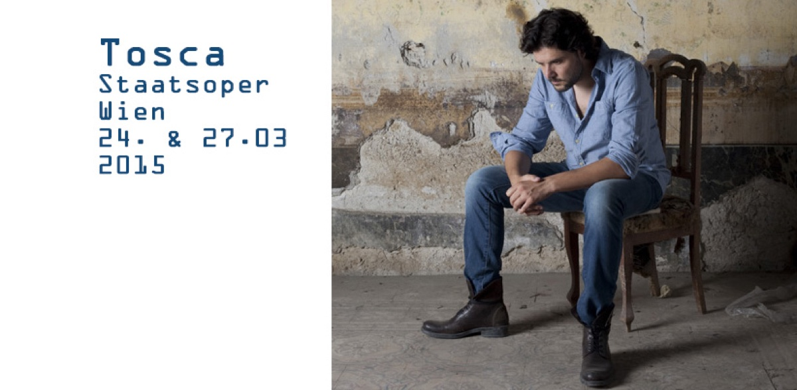
Wiener Staatsoper · 24 e 27 marzo 2015
Scarica

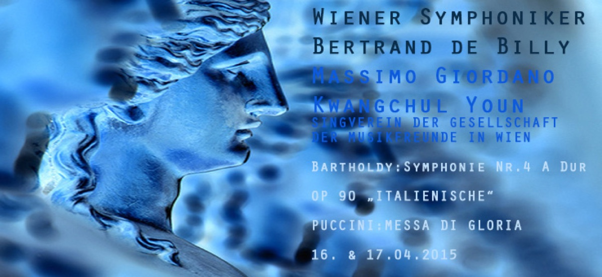
Musikverein, Vienna · 16 e 17 aprile 2015 · Wiener Symphoniker, Bertrand de Billy
Scarica

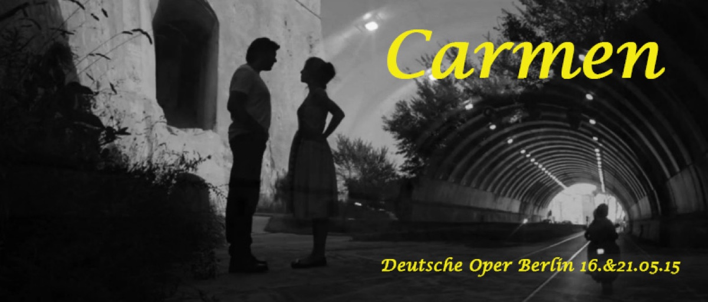
Deutsche Oper Berlin · 16 e 21 maggio 2015
Scarica


Bayerische Staatsoper, Monaco · 13, 16, 21 giugno 2015
Scarica
Dai teatri
Locandine ufficiali
Emesse dai teatri stessi. Riprodotte qui a titolo di documentazione: restano di proprietà del teatro.

Teatro dell’Opera di Roma · prima rappresentazione 8 gennaio 1997 · Mainfroid, con Daniela Dessì, Ferruccio Furlanetto, Paolo Coni e David Kuebler · John Nelson · regia di Federico Tiezzi, scene di Carlo Diappi, costumi di Pasquale Grossi
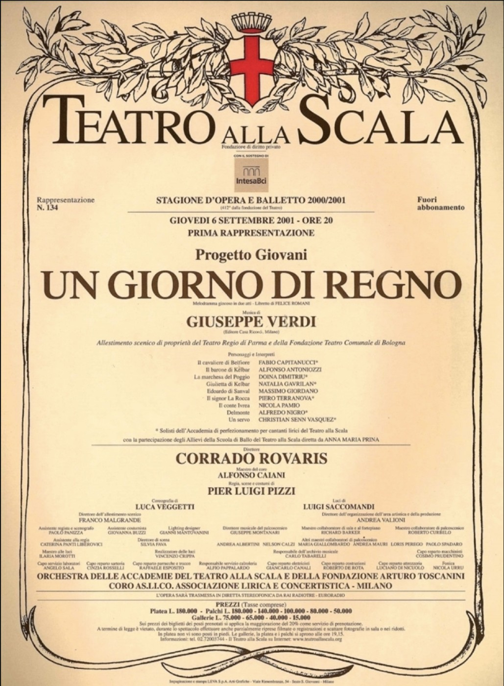
Teatro alla Scala · 6 settembre 2001, prima rappresentazione · Progetto Giovani · Edoardo di Sanval, con Fabio Capitanucci, Alfonso Antoniozzi e Doina Dimitriu · Corrado Rovaris · regia, scene e costumi di Pier Luigi Pizzi · trasmessa in diretta da RAI Radiotre ed Euroradio

Teatro alla Scala, Teatro degli Arcimboldi · 9 novembre 2002 · con Leo Nucci, María José Moreno e Mario Luperi · Roberto Rizzi Brignoli · regia di Gilbert Deflo, scene di Ezio Frigerio, costumi di Franca Squarciapino

Teatro alla Scala, Teatro degli Arcimboldi · 15 ottobre 2002 · Alfredo Germont, con Doina Dimitriu e Ambrogio Maestri · Roberto Rizzi Brignoli · regia di Liliana Cavani, scene di Dante Ferretti, costumi di Gabriella Pescucci

Teatro alla Scala · 4 maggio 2006, prima rappresentazione · Des Grieux, con Inva Mula, Fabio Capitanucci e Philippe Rouillon · Ion Marin · regia di Nicolas Joël · coproduzione con il Théâtre du Capitole di Tolosa
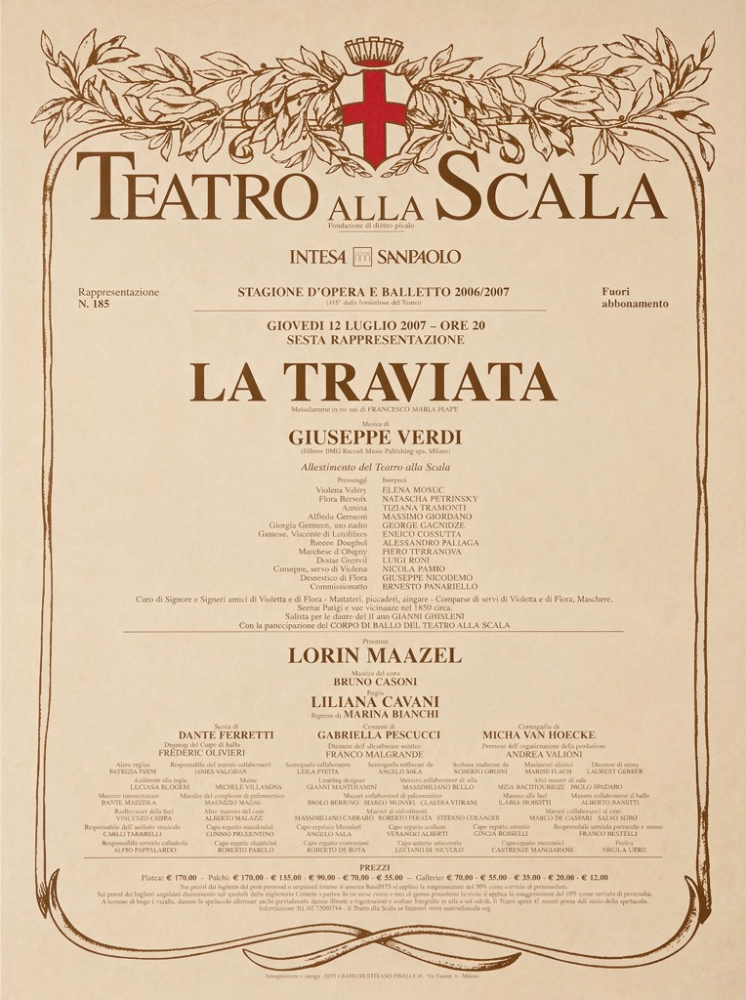
Teatro alla Scala · 12 luglio 2007 · con Elena Mosuc e George Gagnidze · Lorin Maazel · regia di Liliana Cavani, scene di Dante Ferretti, costumi di Gabriella Pescucci
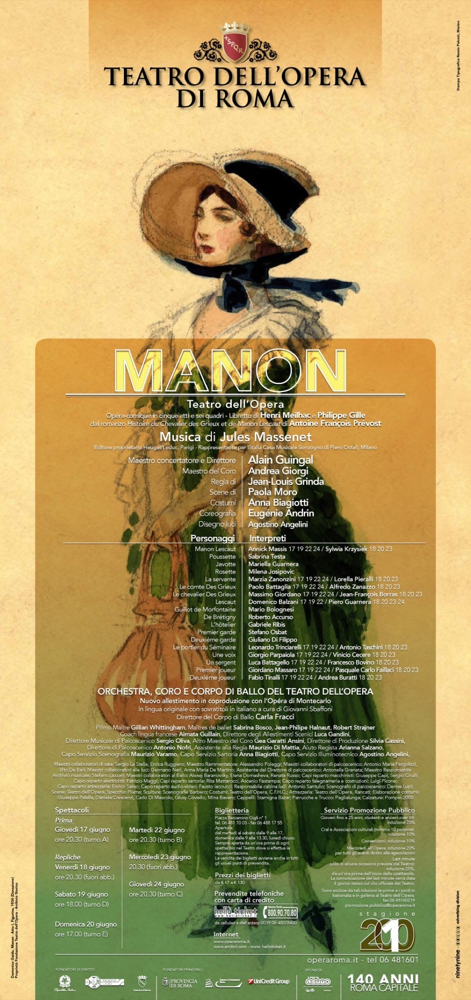
Teatro dell’Opera di Roma · 17, 19, 22 e 24 giugno 2010 · con Annick Massis · Alain Guingal · regia di Jean-Louis Grinda · nuovo allestimento in coproduzione con l’Opéra de Monte-Carlo
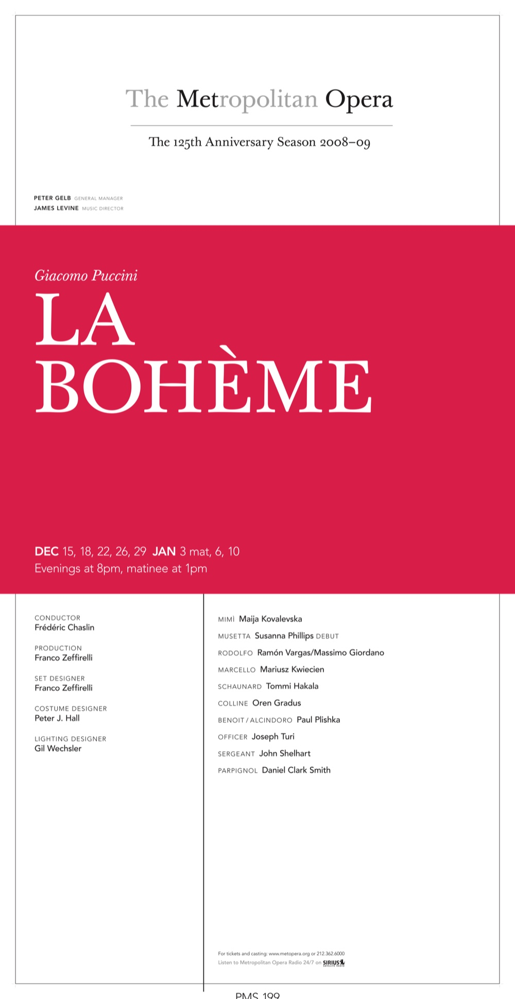
Metropolitan Opera, stagione del 125º anniversario · Rodolfo il 6 e il 10 gennaio 2009 · Frédéric Chaslin, allestimento di Franco Zeffirelli, con Maija Kovalevska e Mariusz Kwiecien
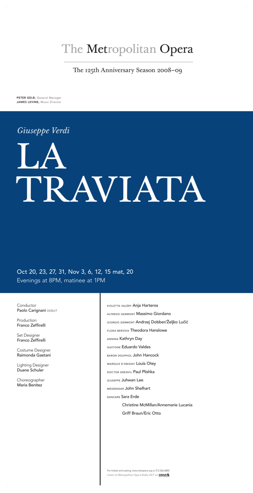
Metropolitan Opera, stagione del 125º anniversario · Alfredo · 20, 23, 27 e 31 ottobre, 3, 6, 12, 15 e 20 novembre 2008 · Paolo Carignani al debutto, allestimento di Franco Zeffirelli, con Anja Harteros e Andrzej Dobber

Metropolitan Opera, stagione del 125º anniversario · Nemorino · 31 marzo e 4, 8, 11, 15, 18 e 22 aprile 2009 · Maurizio Benini, regia di John Copley · in copertina: Starring Angela Gheorghiu and Massimo Giordano